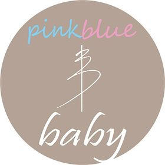
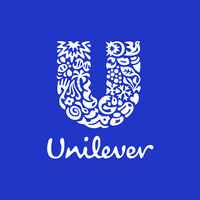
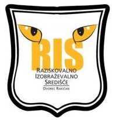

Özgür Üstün
Experienced Key Account Sales Supervisor in Retail, Horeca and B2B channels with a demonstrated history of working in the glass sector more than 3 years.
Skilled in Sales and Marketing Management, Business Planning, Negotiation and Sales Operations.
M.Sc., FinTech and Policy (Sep. 2022 - Sep. 2023)
B.A., Economics (Feb. 2018 - Jun. 2018)
B.A., Economics (Sep. 2014 - Jun. 2019)
Experience (Top)
Sales Supervisor (May 2022 - Sep. 2022)
 |
Sisecam, Istanbul, Turkiye www.sisecam.com.tr
✓ Responsible for Sisecam’s brand Pasabahce’s sales activities in the markets of Eastern Europe such as Slovenia, Croatia, Bosnia and Romania
✓ Negotiating both directly with customers and via agents in order to establish, maintain and develop profitable business for the company
✓ Promoting and selling the company’s products to realise the company’s business plan in terms of product mix, price, warehousing and profitability
✓ Working with an annual sales budget based on the market’s responsibility
✓ Identifying and developing new markets, customers and sectors
✓ Product pricing and price positioning for related products in the market
|
Key Account Specialist (Sep. 2019 - May 2022)
| Sisecam, Istanbul, Turkiye www.sisecam.com.tr
✓ Responsible for Sisecam’s brand Pasabahce’s business in the markets of Europe such as England, Portugal, Sweden, Finland and Denmark from 1 July 2021 and of the Middle East including Saudi Arabia, the UAE, Qatar, Israel as well as South Africa from 1 September 2019 to 30 June 2021
✓ Negotiating both directly with customers and via agents in order to establish, maintain and develop profitable business for the company
✓ Daily active SAP operations (Order Entry, Inventory Analysis, Delivery Control, etc.)
✓ Sales organization coordinated with order deadline management and production planning
✓ Designing paper-carton packaging and providing promotional materials and other by-products for product brand relationship
✓ Providing customer development support in project-based works
✓ Conducting research on problems and resolving complaints
✓ Tracking and ensuring payments in compliance with date of maturity
✓ Coordinating with Logistics Department to guarantee shipment process flow
|
International Customer Management Intern (Jan. 2019 - Sep. 2019)
| Sisecam, Istanbul, Turkiye www.sisecam.com.tr
✓ Assisting to manage and develop Sisecam’s brand Pasabahce’s business in South Asian countries including India, Pakistan, Afghanistan, Nepal, Bangladesh and Sri Lanka
✓ Negotiating both directly with customers and via agents in order to establish, maintain and develop profitable business for the company
✓ Daily active SAP operations (Order Entry, Inventory Analysis, Delivery Control, etc.)
✓ Sales organization coordinated with order deadline management and production planning
✓ Working with an annual sales budget based on the market’s responsibility
✓ Coordinating with Logistics Department to guarantee shipment process flow
|
Marketing Intern (May 2016 - Sep. 2016)
|  | Pinkblue Baby Group, Istanbul, Turkiye www.pinkbluebaby.com
✓ Setting up an e-commerce website page
✓ Assisting to manage social media accounts
✓ Monitoring all social media platforms for trending news, ideas and feedback
✓ Writing and translating texts about products
✓ Following corporate communication process with notables in the sector
|
Certificates (Top)
 | Bloomberg Market Concepts
October 2022 |
 | The EU Jean Monnet Scholarship Programme
September 2022 |
|  | BizzTrip2UnileverXIII Marketing Case Study 1st Place
December 2018 |
 | BU Maritime and Sailing Club - Advanced Sailing Training Brevet
March 2018 |
| BU Maritime and Sailing Club - Basic Sailing Training Brevet
October 2017 |
| Ideasoft Setting up E-Commerce Website Page
June 2016 |
Voluntary Works (Top)
|  | International Language Camp Volunteer
July - August 2018 / Rakican, Slovenia |
| International Language Camp Volunteer
August 2017 / Tallinn, Estonia |
Additional Skills (Top)
✓ English: Advanced (IELTS Academic 7.5 / 9, British Council, Istanbul, Turkey)
✓ German: A2.1 (Turkish – German University, Istanbul, Turkey)
✓ Russian: Pre-intermediate (Bogazici University, Istanbul, Turkey)
✓ Korean: Beginner 1A (Korean Language Education Center, Seoul, Korea)
✓ University Entrance Exam: 9th place in Turkey among more than 2 million students (Verbal, July 2014)
✓ Debate Team Captain of Capa Science High School
✓ Volleyball Team Player of Capa Science High School
✓ Computer Skills:
- SAP
- Google AdWords
- SEO
- Google Trends
- HTML
- CSS
- Microsoft Office Programs
✓ Swimming
✓ Volleyball
✓ Sailing
✓ Travelling